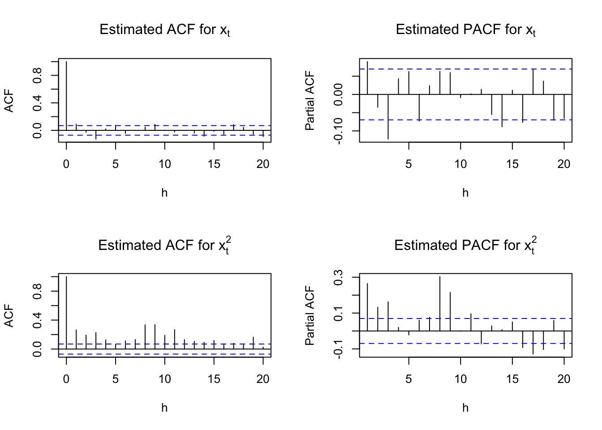
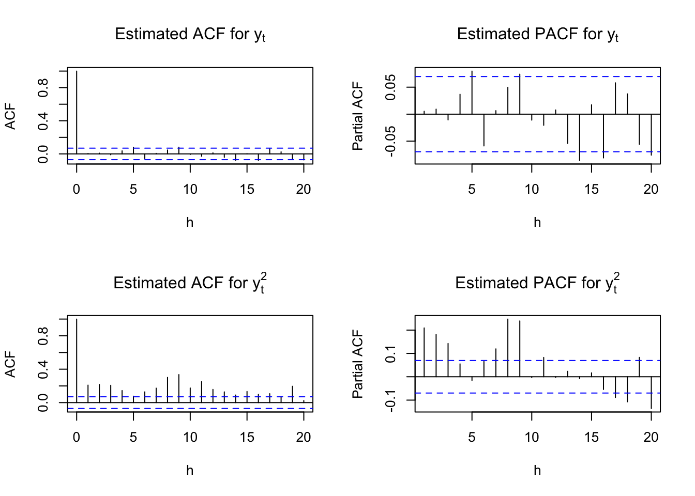
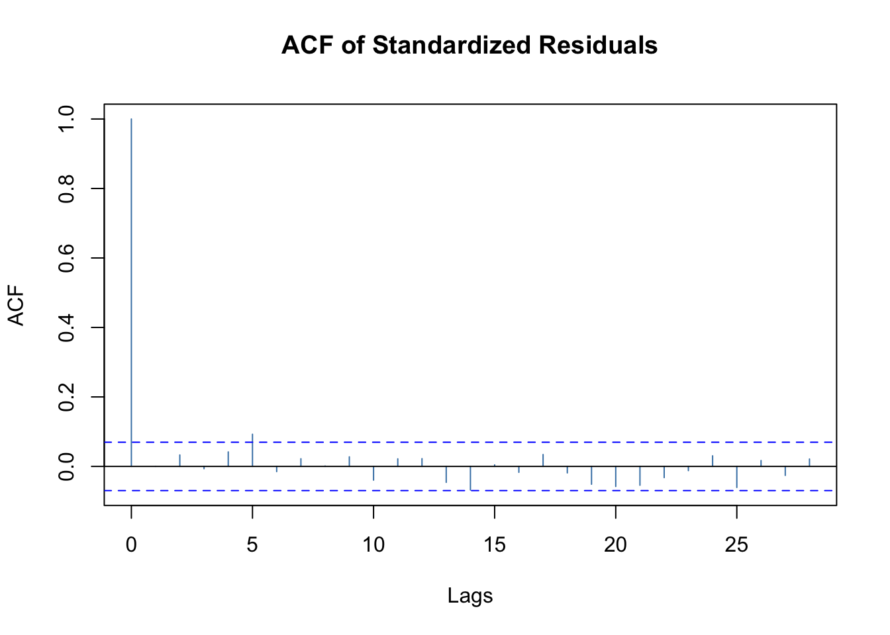
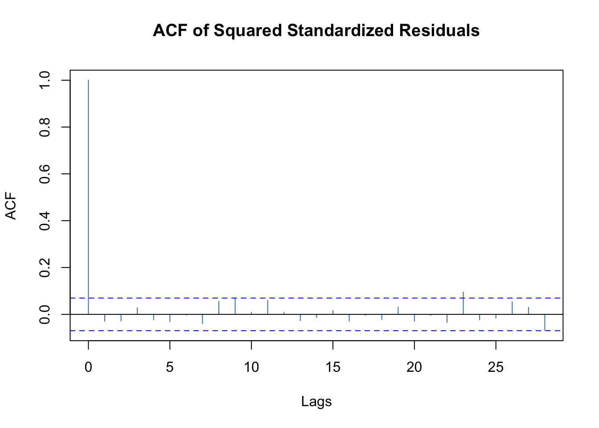
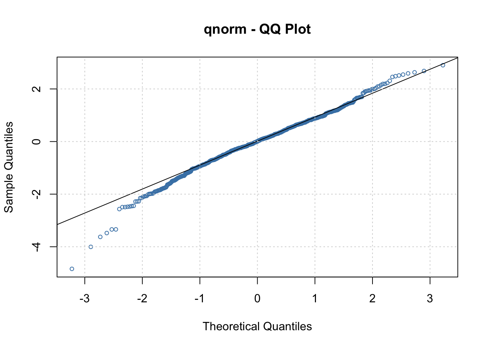
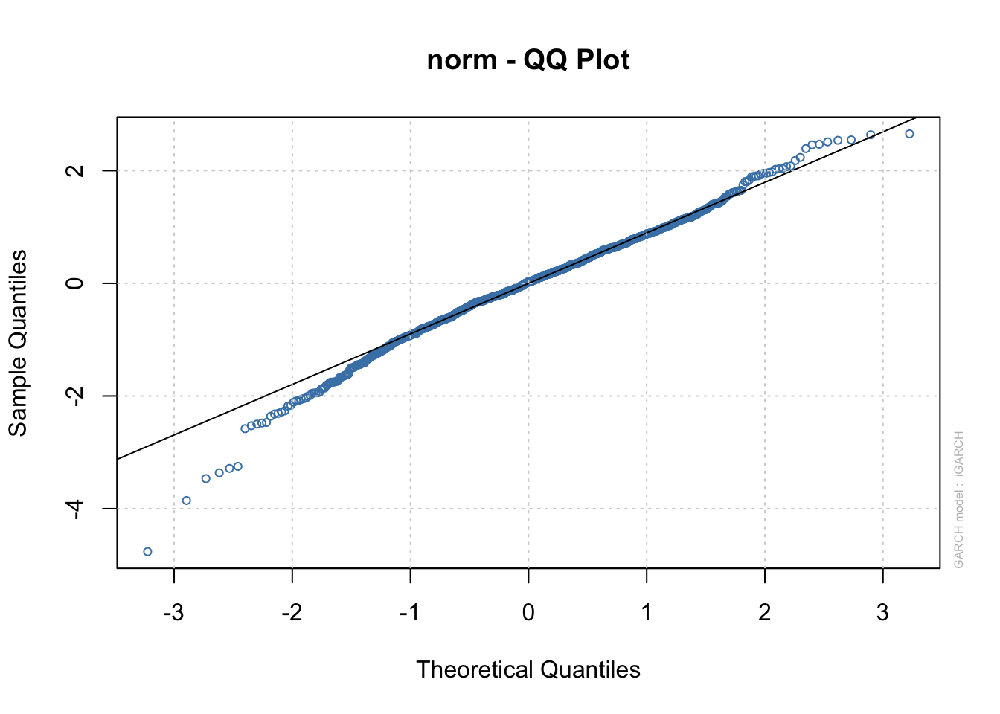

Chapter 23 GARCH Models
GARCH models are the generalization of ARCH models
23.1 GARCH(m, r)
We now examine the GARCH model in more detail. Note that the “G” stands for “Generalized”. The model is
\(y_t=\sigma_t\epsilon_t\) where
\(\sigma_t^2=\alpha_0+\alpha_1y^2_{t-1}+...+\alpha_my^2_{t-m}+\beta_1\sigma^2_{t-1}+...+\beta_r\sigma^2_{t-r}\) and \(\epsilon_t\sim ind.(0,1)\)
The additional parameters help incorporate past variances. Note that \(E(y_t)\) is 0.
Notes:
- This model helps to incorporate past volatilities (as measured by the variance term) that may affect the present. The overall hope is that a smaller number of parameters will be needed for a GARCH model than if an ARCH model was used instead. In other words, we want to have a parsimonious model.
- The \(\sigma^2_{t-1},…,\sigma^2_{t-r}\) are all unobservable.
- We use a normality assumption when estimating the model, so \(\epsilon_t \sim ind. N(0,1)\).
- If r = 0, then GARCH(m,r) = ARCH(m).
- The model can be reparameterized and thought of as a ARMA model for \(y^2_t\). For example, with a GARCH(1,1),
\(\sigma_t^2=\alpha_0+\alpha_1y^2_{t-1}+\beta_1\sigma_{t-1}^2,\)
we obtain,
\[y_t^2=(\sigma_t^2)+(y^2_t-\sigma^2_t)\\ =(\alpha_0+\alpha_1y^2_{t-1}+\beta_1\sigma^2_{t-1})+(y^2_t-\sigma^2_t)\\ =(\alpha_0+\alpha_1y^2_{t-1}+\beta_1\sigma^2_{t-1})+(\beta_1y^2_{t-1}-\beta_1y^2_{t-1})+(y^2_t-\sigma^2_t)\\ =\alpha_0+(\alpha_1+\beta_1)y^2_{t-1}-\beta_1(y^2_{t-1}-\sigma^2_{t-1})+(y^2_t-\sigma^2_t)\\ =\alpha_0+(\alpha_1+\beta_1)y^2_{t-1}-\beta_1\nu_{t-1}+\nu_t\]
where \(\nu_t=y^2_t\sigma^2_t=\sigma^2\epsilon_t^2-\sigma_t^2=\sigma_t^2(\epsilon_t^2-1)\) plays the role of “\(w_t\)” in a regular ARMA(1,1) model.
- The constraints on the parameters are: \(\alpha_0 > 0, \alpha_i \ge 0, \beta_i \ge 0,\) and \(\sum_{i=1}^{max(m,r)}(\alpha_i+\beta_j)<1\). Note that if m < r, then the extra \(\alpha_i\)’s in the sum are 0; vice versa for r < m and the \(\beta_j\)’s.
- Integrated GARCH or IGARCH model
In a GARCH(1,1) model, it can be found that at times \(\alpha_1 + \beta_1 = 1\). For this case,
\(y_t^2=\alpha_0+(\alpha_1+\beta_1)y^2_{t-1}-\beta_1\nu_{t-1}+\nu_t=\alpha_0+y^2_{t-1}-\beta_1\nu_{t-1}+\nu_t\)
\(\implies y^2_t-y^2_{t-1}=\alpha_0-\beta_1\nu_{t-1}+\nu_t\)
\(\implies (1-B)y^2_t=\alpha_0-\beta_1\nu_{t-1}+\nu_t\)
An interpretation of the IGARCH(1,1) model is that the volatility is persistent. This is because it can be shown that the past volatility (variances) has an effect on all future volatilities. For more information, see Chan’s and Pena, Tiao, and Tsay’s textbooks.
- Due to \(y_t\) being squared and how it is included in the model, GARCH (including ARCH) models affect volatility (variability) in returns the same way for both positive and negative returns. This can be unrealistic due to how the stock market tends to react to “good” and “bad” news. Hull’s finance textbook says that
The volatility of an equity’s price tends to be inversely related to the price so that a negative \(u_{n-1} (y_{t-1})\) has a bigger effect on \(\sigma_n (\sigma_t)\) than the same positive \(u_{n-1} (y_{t-1})\).
- Determining the value of r in the model is not straightforward. Pena, Tiao, and Tsay’s textbook says
The identification of GARCH models in practice is not simple. Only lower-order GARCH models are used in most applications.
What should you do then? One possibility is to try a few different models and see which model gives satisfactory residuals. From these models, choose the one with the smallest number of parameters.
Example 23.1 Monthly returns of value-weighted S&P 500 Index from 1926 to 1991 (SP500.R)
This is an example from Pena, Tiao, and Tsay’s textbook. The authors say that an ARCH(9) model would be needed if the GARCH part was not used.
Below are my initial examinations of the data:
sp500 <- read.table(file = "sp500.txt", header = FALSE,
col.names = "x", sep = "")
head(sp500)## x
## 1 0.0225
## 2 -0.0440
## 3 -0.0591
## 4 0.0227
## 5 0.0077
## 6 0.0432x <- sp500$xpar(mfrow = c(2,2))
acf(x = x, type = "correlation", lag.max = 20, xlab =
"h", main = expression(paste("Estimated ACF for ",
x[t])))
pacf(x = x, lag.max = 20, xlab = "h", main =
expression(paste("Estimated PACF for ", x[t])))
acf(x = x^2, type = "correlation", lag.max = 20, xlab =
"h", main = expression(paste("Estimated ACF for ",
x[t]^2)))
pacf(x = x^2, lag.max = 20, xlab = "h", main =
expression(paste("Estimated PACF for ", x[t]^2)))
par(mfrow = c(1,1))The above plots show dependence in the \(x_t\) and \(x_t^2\) series. I am not sure if it is really appropriate to look at the \(x_t^2\) series plots yet because we have not tried to model the dependence in the \(x_t\) series. However, because the authors look at the \(x_t^2\), I still constructed the plots here.
The authors suggest a MA(3) or AR(3) model would be appropriate for \(x_t\). They focus on an AR(3).
mod.fit.ar3 <- arima(x = x, order = c(3, 0, 0),
include.mean = TRUE)
mod.fit.ar3##
## Call:
## arima(x = x, order = c(3, 0, 0), include.mean = TRUE)
##
## Coefficients:
## ar1 ar2 ar3 intercept
## 0.0890 -0.0238 -0.1229 0.0062
## s.e. 0.0353 0.0355 0.0353 0.0019
##
## sigma^2 estimated as 0.00333: log likelihood = 1135.25, aic = -2260.5y <- as.numeric(mod.fit.ar3$residuals)par(mfrow = c(2,2))
acf(x = y, type = "correlation", lag.max = 20, xlab =
"h", main = expression(paste("Estimated ACF for ",
y[t])))
pacf(x = y, lag.max = 20, xlab = "h", main =
expression(paste("Estimated PACF for ", y[t])))
acf(x = y^2, type = "correlation", lag.max = 20, xlab =
"h", main = expression(paste("Estimated ACF for ",
y[t]^2)))
pacf(x = y^2, lag.max = 20, xlab = "h", main =
expression(paste("Estimated PACF for ", y[t]^2)))
par(mfrow = c(1,1))The estimated ARMA(3,0) model is
\(x_t= 0.0066 + 0.0890x_{t-1} - 0.0238x_{t-2} - 0.1229x_{t-3} + w_t\)
where \((1-0.0890+0.0238+0.1229)\times 0.0062 = 0.0066.\)
Below is code for an ARMA(3,0) and GARCH(1,1) model suggested by the authors.
library(fGarch)## NOTE: Packages 'fBasics', 'timeDate', and 'timeSeries' are no longer
## attached to the search() path when 'fGarch' is attached.
##
## If needed attach them yourself in your R script by e.g.,
## require("timeSeries")# garch(1,1)=garch(m,r)
mod.fit.garch <- garchFit(formula = ~ arma(3,0) +
garch(1, 1), data = x)##
## Series Initialization:
## ARMA Model: arma
## Formula Mean: ~ arma(3, 0)
## GARCH Model: garch
## Formula Variance: ~ garch(1, 1)
## ARMA Order: 3 0
## Max ARMA Order: 3
## GARCH Order: 1 1
## Max GARCH Order: 1
## Maximum Order: 3
## Conditional Dist: norm
## h.start: 4
## llh.start: 1
## Length of Series: 792
## Recursion Init: mci
## Series Scale: 0.0584588
##
## Parameter Initialization:
## Initial Parameters: $params
## Limits of Transformations: $U, $V
## Which Parameters are Fixed? $includes
## Parameter Matrix:
## U V params includes
## mu -1.05083512 1.050835 0.10538957 TRUE
## ar1 -0.99999999 1.000000 0.08904585 TRUE
## ar2 -0.99999999 1.000000 -0.02383888 TRUE
## ar3 -0.99999999 1.000000 -0.12286194 TRUE
## omega 0.00000100 100.000000 0.10000000 TRUE
## alpha1 0.00000001 1.000000 0.10000000 TRUE
## gamma1 -0.99999999 1.000000 0.10000000 FALSE
## beta1 0.00000001 1.000000 0.80000000 TRUE
## delta 0.00000000 2.000000 2.00000000 FALSE
## skew 0.10000000 10.000000 1.00000000 FALSE
## shape 1.00000000 10.000000 4.00000000 FALSE
## Index List of Parameters to be Optimized:
## mu ar1 ar2 ar3 omega alpha1 beta1
## 1 2 3 4 5 6 8
## Persistence: 0.9
##
##
## --- START OF TRACE ---
## Selected Algorithm: nlminb
##
## R coded nlminb Solver:
##
## 0: 1003.6872: 0.105390 0.0890458 -0.0238389 -0.122862 0.100000 0.100000 0.800000
## 1: 995.74461: 0.105410 0.0876417 -0.0235044 -0.119616 0.0740807 0.0979005 0.787369
## 2: 990.75733: 0.105454 0.0848693 -0.0230980 -0.112789 0.0710185 0.121666 0.802189
## 3: 987.48803: 0.105504 0.0819217 -0.0227227 -0.105345 0.0446379 0.126014 0.800792
## 4: 982.54750: 0.105604 0.0766567 -0.0225712 -0.0911334 0.0427140 0.137514 0.821156
## 5: 979.92009: 0.105743 0.0701684 -0.0226763 -0.0738049 0.0270235 0.134032 0.834528
## 6: 978.61608: 0.105952 0.0612498 -0.0229524 -0.0521543 0.0301338 0.125691 0.846764
## 7: 977.96259: 0.106329 0.0496440 -0.0237230 -0.0291341 0.0276534 0.115843 0.846904
## 8: 977.52402: 0.107271 0.0389018 -0.0254120 -0.0208860 0.0176196 0.134479 0.855067
## 9: 977.45921: 0.107286 0.0388839 -0.0253908 -0.0204278 0.0204705 0.133400 0.854693
## 10: 977.31737: 0.107412 0.0387383 -0.0251804 -0.0186084 0.0196524 0.133315 0.852651
## 11: 977.22697: 0.107835 0.0393903 -0.0245571 -0.0145483 0.0216660 0.132704 0.851841
## 12: 977.11546: 0.108826 0.0400104 -0.0250284 -0.0132394 0.0200026 0.126621 0.856712
## 13: 977.05531: 0.110795 0.0260454 -0.0285135 -0.00973136 0.0220886 0.130239 0.851216
## 14: 976.94446: 0.113227 0.0317715 -0.0243063 -0.00512716 0.0231433 0.129823 0.848107
## 15: 976.92735: 0.113230 0.0318063 -0.0243188 -0.00512767 0.0236656 0.129925 0.848439
## 16: 976.91931: 0.113269 0.0322184 -0.0244454 -0.00515025 0.0235116 0.128610 0.848831
## 17: 976.90131: 0.113559 0.0324046 -0.0249471 -0.00552741 0.0239594 0.128124 0.849491
## 18: 976.83258: 0.115897 0.0336838 -0.0281444 -0.00812651 0.0238854 0.124137 0.851655
## 19: 976.80519: 0.118179 0.0332553 -0.0203446 -0.00824044 0.0242717 0.123700 0.852742
## 20: 976.76707: 0.120367 0.0391607 -0.0259719 -0.00365977 0.0236082 0.126376 0.850377
## 21: 976.75533: 0.122695 0.0382424 -0.0303786 -0.00762611 0.0241825 0.128887 0.849547
## 22: 976.73969: 0.124793 0.0310592 -0.0269884 -0.0160011 0.0229480 0.128113 0.849848
## 23: 976.70402: 0.126884 0.0261170 -0.0243009 -0.00734339 0.0223637 0.124973 0.854483
## 24: 976.70002: 0.129128 0.0336700 -0.0233421 -0.00356300 0.0230084 0.124833 0.852135
## 25: 976.69080: 0.129128 0.0336504 -0.0234180 -0.00363870 0.0236158 0.125068 0.852478
## 26: 976.68530: 0.129189 0.0336229 -0.0237598 -0.00381752 0.0234111 0.124953 0.852354
## 27: 976.67989: 0.129192 0.0333550 -0.0247363 -0.00486116 0.0236580 0.124921 0.852547
## 28: 976.67202: 0.129491 0.0333363 -0.0253938 -0.00535265 0.0234363 0.124796 0.852334
## 29: 976.65727: 0.131722 0.0331076 -0.0280498 -0.00867119 0.0237836 0.124948 0.851825
## 30: 976.65501: 0.131468 0.0326322 -0.0299829 -0.00796177 0.0235265 0.124739 0.852282
## 31: 976.65368: 0.131591 0.0308315 -0.0290713 -0.00982600 0.0232989 0.123814 0.853180
## 32: 976.65338: 0.131819 0.0313254 -0.0306442 -0.0110318 0.0234060 0.124235 0.853238
## 33: 976.65318: 0.132071 0.0330244 -0.0307304 -0.0112703 0.0232420 0.124848 0.852585
## 34: 976.65225: 0.131749 0.0327383 -0.0304781 -0.0108716 0.0233583 0.124195 0.852905
## 35: 976.65189: 0.131944 0.0320196 -0.0302000 -0.0105636 0.0233152 0.124284 0.852997
## 36: 976.65187: 0.131796 0.0319443 -0.0302778 -0.0106940 0.0233441 0.124264 0.853001
## 37: 976.65186: 0.131854 0.0319725 -0.0302665 -0.0106516 0.0233351 0.124241 0.853020
## 38: 976.65186: 0.131849 0.0319681 -0.0302607 -0.0106491 0.0233351 0.124246 0.853015
##
## Final Estimate of the Negative LLH:
## LLH: -1272.179 norm LLH: -1.606287
## mu ar1 ar2 ar3 omega
## 7.707734e-03 3.196813e-02 -3.026074e-02 -1.064905e-02 7.974607e-05
## alpha1 beta1
## 1.242461e-01 8.530153e-01
##
## R-optimhess Difference Approximated Hessian Matrix:
## mu ar1 ar2 ar3 omega
## mu -425836.4145 -3036.1026559 -3269.49114 -3118.51723 9.115328e+05
## ar1 -3036.1027 -702.8158697 -57.97032 -22.11076 -7.100829e+03
## ar2 -3269.4911 -57.9703153 -706.32373 -35.03022 7.716896e+04
## ar3 -3118.5172 -22.1107636 -35.03022 -740.96700 -3.958440e+04
## omega 911532.8103 -7100.8292874 77168.96369 -39584.39817 -5.732731e+09
## alpha1 899.0174 0.9679937 59.78523 27.58115 -7.141920e+06
## beta1 -537.2081 -17.6937957 112.90490 -148.96517 -1.020703e+07
## alpha1 beta1
## mu 8.990174e+02 -5.372081e+02
## ar1 9.679937e-01 -1.769380e+01
## ar2 5.978523e+01 1.129049e+02
## ar3 2.758115e+01 -1.489652e+02
## omega -7.141920e+06 -1.020703e+07
## alpha1 -1.380689e+04 -1.660275e+04
## beta1 -1.660275e+04 -2.338048e+04
## attr(,"time")
## Time difference of 0.04737186 secs
##
## --- END OF TRACE ---
##
##
## Time to Estimate Parameters:
## Time difference of 0.08668208 secssummary(mod.fit.garch)##
## Title:
## GARCH Modelling
##
## Call:
## garchFit(formula = ~arma(3, 0) + garch(1, 1), data = x)
##
## Mean and Variance Equation:
## data ~ arma(3, 0) + garch(1, 1)
## <environment: 0x118d6a6a0>
## [data = x]
##
## Conditional Distribution:
## norm
##
## Coefficient(s):
## mu ar1 ar2 ar3 omega alpha1
## 7.7077e-03 3.1968e-02 -3.0261e-02 -1.0649e-02 7.9746e-05 1.2425e-01
## beta1
## 8.5302e-01
##
## Std. Errors:
## based on Hessian
##
## Error Analysis:
## Estimate Std. Error t value Pr(>|t|)
## mu 7.708e-03 1.607e-03 4.798 1.61e-06 ***
## ar1 3.197e-02 3.837e-02 0.833 0.40473
## ar2 -3.026e-02 3.841e-02 -0.788 0.43076
## ar3 -1.065e-02 3.756e-02 -0.284 0.77677
## omega 7.975e-05 2.810e-05 2.838 0.00454 **
## alpha1 1.242e-01 2.247e-02 5.529 3.22e-08 ***
## beta1 8.530e-01 2.183e-02 39.075 < 2e-16 ***
## ---
## Signif. codes: 0 '***' 0.001 '**' 0.01 '*' 0.05 '.' 0.1 ' ' 1
##
## Log Likelihood:
## 1272.179 normalized: 1.606287
##
## Description:
## Wed May 3 20:10:39 2023 by user:
##
##
## Standardised Residuals Tests:
## Statistic p-Value
## Jarque-Bera Test R Chi^2 73.04842 1.110223e-16
## Shapiro-Wilk Test R W 0.9857968 5.961508e-07
## Ljung-Box Test R Q(10) 11.56744 0.315048
## Ljung-Box Test R Q(15) 17.78747 0.2740039
## Ljung-Box Test R Q(20) 24.11916 0.2372257
## Ljung-Box Test R^2 Q(10) 10.31614 0.4132088
## Ljung-Box Test R^2 Q(15) 14.22819 0.5082979
## Ljung-Box Test R^2 Q(20) 16.79404 0.6663038
## LM Arch Test R TR^2 13.34305 0.3446075
##
## Information Criterion Statistics:
## AIC BIC SIC HQIC
## -3.194897 -3.153581 -3.195051 -3.179018- \(\hat \beta_1=8.5302e-01\)
plot(mod.fit.garch, which=10)
plot(mod.fit.garch, which=11)
plot(mod.fit.garch, which=13)
The estimated GARCH model is: \(\hat \sigma^2_t= 7.975\times 10^{-5} + 0.1242y^2_{t-1} + 0.8530\hat \sigma^2_{t-1}\)
Notice all of the parameters are significantly different from 0. Because we re-estimated the ARMA(3,0) too, we can re-examine the significance of the corresponding parameters. Similar to the authors, I think the ARMA(3,0) model may not be necessary! Dropping the ARMA(3,0) model as in Pena, Tiao, and Tsay. I re-fit a GARCH model. However, note that non-normality indicated by the QQ-plot above. This was not mentioned in the book.
Furthermore, this could adversely affect inferences as well.
Below is my corresponding code and output without the ARMA(3,0) part.
mod.fit.garch <- garchFit(formula = ~ garch(1, 1), data =
x, trace=FALSE)
summary(mod.fit.garch)##
## Title:
## GARCH Modelling
##
## Call:
## garchFit(formula = ~garch(1, 1), data = x, trace = FALSE)
##
## Mean and Variance Equation:
## data ~ garch(1, 1)
## <environment: 0x11bd96dd0>
## [data = x]
##
## Conditional Distribution:
## norm
##
## Coefficient(s):
## mu omega alpha1 beta1
## 7.4497e-03 8.0615e-05 1.2198e-01 8.5436e-01
##
## Std. Errors:
## based on Hessian
##
## Error Analysis:
## Estimate Std. Error t value Pr(>|t|)
## mu 7.450e-03 1.538e-03 4.845 1.27e-06 ***
## omega 8.061e-05 2.833e-05 2.845 0.00444 **
## alpha1 1.220e-01 2.202e-02 5.540 3.02e-08 ***
## beta1 8.544e-01 2.175e-02 39.276 < 2e-16 ***
## ---
## Signif. codes: 0 '***' 0.001 '**' 0.01 '*' 0.05 '.' 0.1 ' ' 1
##
## Log Likelihood:
## 1269.455 normalized: 1.602848
##
## Description:
## Wed May 3 20:10:39 2023 by user:
##
##
## Standardised Residuals Tests:
## Statistic p-Value
## Jarque-Bera Test R Chi^2 80.32111 0
## Shapiro-Wilk Test R W 0.98505 3.136885e-07
## Ljung-Box Test R Q(10) 11.2205 0.340599
## Ljung-Box Test R Q(15) 17.99703 0.262822
## Ljung-Box Test R Q(20) 24.29896 0.2295768
## Ljung-Box Test R^2 Q(10) 9.920157 0.4475259
## Ljung-Box Test R^2 Q(15) 14.21124 0.509572
## Ljung-Box Test R^2 Q(20) 16.75081 0.6690903
## LM Arch Test R TR^2 13.04872 0.3655092
##
## Information Criterion Statistics:
## AIC BIC SIC HQIC
## -3.195594 -3.171985 -3.195645 -3.186520- \(\hat \beta_1=8.544e-01\)
The estimated model is \(\hat \sigma_t^2= 8.061\times 10^{-5} + 0.1220\tilde y^2_{t-1} + 0.8544\hat \sigam^2_{t-1}\) , where \(\mu\) is estimated to be \(7.45\times 10^{-3}\). A QQ-plot for the standardized residuals still indicates a normality problem.
What can you do about the normality problem?
- Assume a different distribution for \(\epsilon_t\). See the
cond.distargument ofgarchFit()for a list. Note that the documentation for what these distributions represent is not good. - Use “robust” standard errors. The
cond.dist = "QMLE"argument value produces these types of standard errors using a sandwich estimate of the covariance matrix. The documentation for this is still somewhat poor. In most other statistical applications, sandwich estimators produce consistent estimates of the covariance matrix even when the distributional assumptions are incorrectly specified.
The authors also suggest fitting an IGARCH model to the data due to \(\hat \alpha+\hat \beta\) being close to 1. Unfortunately, garchFit() can fit these types of models. Code is included in my program for the ugarchfit() function of the rugarch package to fit the model. The estimated model is \(\hat \sigma_t^2= 0.0074 + 0.1430\tilde y^2_{t-1} + 0.8570\hat \sigma_{t-1}^2\) with \(x_t = 0.0074 + wt\) where \(w_t\sim ind.N(0, \sigma_t^2)\). The intercept parameter is estimated simultaneously with the other parameters. Notice \(\hat \alpha_+\hat \beta_= 1\) as required by the IGARCH(1,1) model, The authors state that “this model seems hard to justify for an excess return series.” This statement is in reference to how past volatility affects all future volatilities for this model (i.e., 1950 volatility affect 1990s volatility). Overall, I did not see improvement with this model over the others.
library(rugarch)## Loading required package: parallel##
## Attaching package: 'rugarch'## The following object is masked from 'package:stats':
##
## sigmaspec3 <- ugarchspec(variance.model = list(model = "iGARCH", garchOrder = c(1,1)),
mean.model = list(armaOrder = c(0, 0), include.mean = TRUE, arfima = FALSE))
mod.fit.igarch <- ugarchfit(spec = spec3, data = as.numeric(x))
show(mod.fit.igarch) ##
## *---------------------------------*
## * GARCH Model Fit *
## *---------------------------------*
##
## Conditional Variance Dynamics
## -----------------------------------
## GARCH Model : iGARCH(1,1)
## Mean Model : ARFIMA(0,0,0)
## Distribution : norm
##
## Optimal Parameters
## ------------------------------------
## Estimate Std. Error t value Pr(>|t|)
## mu 0.007417 0.001525 4.8621 0.000001
## omega 0.000051 0.000018 2.9238 0.003458
## alpha1 0.142951 0.021443 6.6667 0.000000
## beta1 0.857049 NA NA NA
##
## Robust Standard Errors:
## Estimate Std. Error t value Pr(>|t|)
## mu 0.007417 0.001587 4.6726 0.000003
## omega 0.000051 0.000019 2.6913 0.007118
## alpha1 0.142951 0.024978 5.7230 0.000000
## beta1 0.857049 NA NA NA
##
## LogLikelihood : 1268.238
##
## Information Criteria
## ------------------------------------
##
## Akaike -3.1950
## Bayes -3.1773
## Shibata -3.1951
## Hannan-Quinn -3.1882
##
## Weighted Ljung-Box Test on Standardized Residuals
## ------------------------------------
## statistic p-value
## Lag[1] 0.5265 0.4681
## Lag[2*(p+q)+(p+q)-1][2] 0.5304 0.6795
## Lag[4*(p+q)+(p+q)-1][5] 2.5233 0.5009
## d.o.f=0
## H0 : No serial correlation
##
## Weighted Ljung-Box Test on Standardized Squared Residuals
## ------------------------------------
## statistic p-value
## Lag[1] 1.166 0.2803
## Lag[2*(p+q)+(p+q)-1][5] 2.672 0.4702
## Lag[4*(p+q)+(p+q)-1][9] 4.506 0.5054
## d.o.f=2
##
## Weighted ARCH LM Tests
## ------------------------------------
## Statistic Shape Scale P-Value
## ARCH Lag[3] 0.4608 0.500 2.000 0.4972
## ARCH Lag[5] 1.3891 1.440 1.667 0.6219
## ARCH Lag[7] 2.2324 2.315 1.543 0.6682
##
## Nyblom stability test
## ------------------------------------
## Joint Statistic: 0.4498
## Individual Statistics:
## mu 0.08818
## omega 0.14331
## alpha1 0.22410
##
## Asymptotic Critical Values (10% 5% 1%)
## Joint Statistic: 0.846 1.01 1.35
## Individual Statistic: 0.35 0.47 0.75
##
## Sign Bias Test
## ------------------------------------
## t-value prob sig
## Sign Bias 3.2677 0.001131 ***
## Negative Sign Bias 1.3431 0.179638
## Positive Sign Bias 0.9411 0.346937
## Joint Effect 19.5642 0.000209 ***
##
##
## Adjusted Pearson Goodness-of-Fit Test:
## ------------------------------------
## group statistic p-value(g-1)
## 1 20 31.84 0.03259
## 2 30 38.61 0.10944
## 3 40 50.73 0.09888
## 4 50 57.49 0.18957
##
##
## Elapsed time : 0.0410831plot(mod.fit.igarch, which=9)
23.2 Final Comments
- There are MANY other types of GARCH models. In fact, I would not be surprised if there are whole classes on the subject at other universities, perhaps in finance departments.
- One of these other GARCH models is an EGARCH (where the “E” stands for exponential) model which helps to account for potential asymmetry between positive/negative returns. Remember that ARCH and GARCH treated them symmetrically. In other words, we did not differentiate between positive or negative returns in the model since \(y_t\) was always squared. The
ugarchfit()function can fit these types of models (usemodel = "eGARCH"in the model specifications). - An asymmetric power GARCH model can account for the asymmetry as well. Shumway and Stoffer’s textbook describe this model.